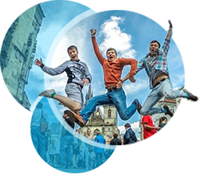
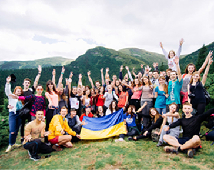

<!DOCTYPE html>
<html>
<head>
    <title>StudTravel</title>
    <meta name="viewport" content="
        initial-scale=1,
        minimum-scale=1,
        maximum-scale=1,
        user-scalable=0" />
    <meta http-equiv="Content-Type" content="text/html; charset=utf-8"/>
    <meta name="viewport" content="width=device-width, initial-scale=1">

    <link rel="stylesheet" href="css/style.css"/>
    <link rel="stylesheet" href="css/owl.carousel.min.css"/>
</head>


<body>
    <header class="header">
        <div class="header__top">
            <div class="header__soc">
                <a href="mailto:@studtravel.com.ua" class="link-mail">@studtravel.com.ua</a>
                <a href="#" class="link-soc icon-fb"></a>
                <a href="#" class="link-soc icon-in"></a>
                <a href="#" class="link-soc icon-vk"></a>
            </div>
            
            <div class="header__tel">
                <a href="tel:+380(93)361-19-90" class="link-tel">+380(93)361-19-90</a>
                <a href="tel:+380(98)525-85-18" class="link-tel">+380(98)525-85-18</a>
            </div>
        </div>
        <nav class="header__menu">
            <a href="#" class="header__menu__link">Тури</a>
            <a href="#" class="header__menu__link">Відгуки</a>
            <a href="#" class="header__menu__link">Про НАС</a>
            <a href="#" class="header__menu__link">Фотографії</a>
            <a href="#" class="header__menu__link">Відео</a>
            <a href="#" class="header__menu__link">Реєстрація</a>
        </nav>
    </header>

    <main>
        <!--<section class="video js-video">
            <iframe src="https://player.vimeo.com/video/154241888" width="1200" height="600" frameborder="0" webkitallowfullscreen mozallowfullscreen allowfullscreen></iframe>
        </section>-->
        <section class="tour-list">

            <div class="tour tour--lviv">
                <div class="tour__header">
                    
                    <h3 class="tour__title tour__title--lviv">ЛЬВІВ</h3>
                </div>
                <div class="tour__content"></div>
            </div>

            <div class="tour tour--usa">
                <div class="tour__header">
                    
                    <h3 class="tour__title tour__title--usa">WORK<br>AND <br>TRAVEL<br>USA</h3>
                </div>
                <div class="tour__content"></div>
            </div>

            <div class="tour tour--evro">
                <div class="tour__header">
                    
                    <h3 class="tour__title tour__title--evro">
                        <span class="tour__title-big">ЄВРОТУР</span>
                        <span>
                            КРАКІВ - ВІДЕНЬ <br>
                            ПРАГА - БУДАПЕШТ
                        </span>
                    </h3>
                </div>
                <div class="tour__info">
                    ДАТА:
                    <figure class="tour__info__separate"></figure>
                    ЦІНА
                </div>
                <div class="tour__content">
                    <h4 class="title">ПРОГРАМА ТУРУ</h4>
                    <h6 class="step">1 день</h6>
                    <p>
                        23-00 Зустріч на залізничному вокзалі у Львові. Посадка в автобус. Нічний переїзд на територію Угорщини.
                    </p>

                    <h6 class="step">2 день</h6>
                    <p>
                        Нас зустрічає столиця Угорщини - Будапешт.
                        Оглядова екскурсія: прекрасна Буда і величний Пешт - це «Перлина Дунаю» - Будапешт! Про це Місто ... Незабутнє ... Неповторне ... Чарівне ... Дивовижне ... Він пропонує своїм відвідувачам близьку і знайому європейську культуру, але з особливим угорським ароматом ... Місто з древньою історією, культурою, традиціями, життєва сила якого пульсує в кожному його куточку. Будь то ранок, день або вечір, милуєтеся Ви Будапештом з тераси Рибальського бастіону, або Променадної набережної - картина, яка відкривається перед Вашим поглядом, назавжди залишиться в пам'яті ... 
                        <br>
                        - Прогулянка на катері з бокалом шампанського «Ажурна прикраса Будапешта» (по бажанню). Сім мостів служить прикрасою прекрасного Блакитного Дунаю, які, мов нитки перлів, пов'язують дві частини міста - Буду і Пешт. У воді відображаються величні будівлі: Парламент, Академія наук, Королівський палац ... Повз нас "пропливають" готелі, музеї і найкрасивіший розважальний комплекс Будапешта ... Ночівля в готелі. 3 день
                        Сніданок. Виселення з готелю. Переїзд до Відня.
                        Оглядова екскурсія «Відень - столиця Габсбургів ». Відень - місто музики і великих музикантів, місто чарівне і прекрасне ... його по праву називають серцем Європи. Столиця Австро-Угорської імперії, Відень вражає своєю величчю і розкішшю, своїм шармом і теплом ... Це надзвичайне місто!
                        Факультативна екскурсія «Шенбрунн - розкішна резиденція Габсбургів», одна з головних визначних пам'яток австрійської столиці. Це ансамбль, який об'єднує архітектуру і природу, де парк стає продовженням палацу. Ось вже дійсно - кайзерівський розмах: Шенбрунн по площі приблизно рівний всьому "внутрішньому місту".
                        Парк розваг "Пратер". Вільний час. Ночівля в готелі в районі Відня.
                    </p>

                    <div class="photos">
                        
                        
                        
                    </div>

                    <h6 class="step">4 день</h6>
                    <p>
                        Сніданок. Виселення з готелю. Переїзд у Серце Південної Чехії - Ческі-Крумлов. Опинившись на вуличках цього містечка з черепичними дахами можна перенестись на декілька століть назад, тут нічого не змінилось з доби середньовіччя... Екскурсія по місту і вільний час для прогулянок ... Переїзд до Праги. Ночівля в готелі.
                    </p>

                    <h6 class="step">5 день</h6>
                    <p>
                        Ранок. Сніданок. Екскурсія "Прага - місто легенд". В лабіринтах маленьких вуличок Ви поринете в таємничу атмосферу Старого Міста: стародавня Порохова вежа, Становий театр, який пам'ятає ще Великого Моцарта; Каролінум - перший Празький університет, костел Діви Марії перед Тином, легендарний Карлів міст. Староміська площа та Астрономічний годинник з небесною механікою на ратуші, де кожну годину симпатичний скелетик дзвонить в свій дзвіночок та у віконці з'являється процесія з дванадцяти апостолів ... Вільний час
                        - Вечірня програма "Тіні старого міста" (факультативно). На старовинних вуличках, серед затишних будинків і храмів оживають давні легенди. Від таємного служителя старого міста у тьмяному блиску вечірнього освітлення, Ви почуєте перекази, які передаються з вуст в уста лише обраним. Тут з'являються добрі лицарі і привиди, вони кличуть і запрошують нас у своє життя... Ночівля в готелі 
                    </p>


                    <h6 class="step">6 день</h6>
                    <p>
                        Вільний час у Празі. Рекомендуємо факультативну програму: "Карлові Вари, Королівська броварня Крушовіце та музей Яна Бехера".
                        Місто-курорт Карлові Вари - це царство мінеральних джерел, лікеру Бехеровка, скла та порцеляни. Місто з чудовою архітектурою, спокійним дзюрчанням води, солодким запахом вафель та романтичною музикою курортних оркестрів. На нас чекає екскурсія по місту та відвідування музею Яна Бехера. Броварня Крущовіце знаходиться як раз на шляху до Карлових Вар, тому це буде гріх проїхати повз і не відвідати найсмачнішого свіжого чешського пива, яке після екскурсії по заводу подають у необмеженій кількості. Тут кожен гурман знайде свій смак світлого, темного або нефільтрованого пива Крушовіце.  Ночівля в готелі
                    </p>

                    <h6 class="step">7 день</h6>
                    <p>
                        Вільний день у Празі або ж факультативна екскурсія у перлину Німеччини - Дрезден (35€).
                        Протягом семи століть місто було резиденцією герцогів і королів. Дрезден відомий своїми архітектурними ансамблями, скарбами музеїв, колекціями живопису і прекрасною панорамою берегів Ельби. Тут все виблискує та переливається яскравими вогнями - «Флоренція на Ельбі», як часто називають Дрезден. Занурення в саксонський колорит ми почнемо з дрезденського Старого міста. Надзвичайно компактний, він згрупований навколо Театральної площі, центр якої прикрашають кінний пам'ятник королю Йоганну і будівля Дрезденської опери.
                        У Вільний час рекомендуємо насолодитися красою Дрезденської картинної галереї. Тут знаходиться триптих «Богоматір з немовлям» Яна Ван Ейка, виписаний з такою фотографічною точністю, що його можна розглядати цілу вічність, ніжну «Дівчину з листом» Вермеєра Делфтського і перлину колекції - незрівнянну «Сикстинську Мадонну».
                        Повернення в Прагу. Переїзд на територію Польщі. Ночівля в готелі
                    </p>

                    <h6 class="step">8 день</h6>
                    <p>
                        Сніданок. Виселення з готелю. Оглядова екскурсія по Вроцлаву.
                        Нічний переїзд, повернення до України.
                    </p>

                    <h6 class="step">9 день</h6>
                    <p>
                        Переїзд до Львова. Сніданок. Вільний час та заключний вечір туру в одному з закладів Львова. ВАРТІСТЬ ТУРУ
                        - 240€ при реєстрації до 25 вересня
                        - 245€ при реєстрації до 10 жовтня
                        - 250€ при реєстрації до 25 жовтня
                        - 255€ при реєстрації до 10 листопада
                        - 260€ при реєстрації до 25 листопада
                    </p>

                    <p>
                        Вартість включає:
                        - трансфер комфортабельним автобусом зі Львова
                        - проживання 6 ночей у готелях 3*
                        - сніданки
                        - оглядові екскурсії у Вроцлаві, Празі, Чеському-Крумлові, Відні та Будапешті
                        - супровід групи
                        - страхування
                    </p>

                    <p>
                        Вартість не включає:
                        - консульський та сервісний збір
                        - проїзд до/зі Львова від місця вашого проживання.
                        Але тут ми вас проконсультуємо та допоможемо взяти організовано квитки.
                        - додаткові екскурсії (Карлові Вари 30€, Дрезден 35€, кораблик в Будапешті 20€)
                        - проїзд в громадському транспорті
                        - власні витрати
                        Протягом 7 днів після реєстрації, щоб бронювання місця залишилось за Вами, потрібно внести аванс у розмірі 100Є.
                    </p>

                    <p>
                        ПОВНУ ОПЛАТУ ЗА ПОЇЗДКУ ПОТРІБНО ЗДІЙСНИТИ ДО 15 ЛИПНЯ 23:59!
                        Інакше 16 липня бронювання знімається, завдаток не повертається і ми вправі віддати ваше місце іншому за решту вартості туру.
                    </p>

                    <p>
                        Кошти та документи можна передати при зустрічі з одним з представників Stud Travel
                    </p>
                </div>
                <div class="tour__reg">
                    
                    <a href="">ЗАРЕЄСТРУВАТИСЯ</a>
                </div>
            </div>

            <div class="tour tour--pylypets">
                <div class="tour__header">
                    
                    <h3 class="tour__title tour__title--pylypets">ПИЛИПЕЦЬ</h3>
                </div>
                <div class="tour__content"></div>
            </div>

            <div class="tour tour--buka">
                <div class="tour__header">
                    
                    <h3 class="tour__title tour__title--buka">БУКОВЕЛЬ</h3>
                </div>
                <div class="tour__content"></div>
            </div>

            <div class="tour tour--bucovina">
                <div class="tour__header">
                    
                    <h3 class="tour__title tour__title--bucovina">БУКОВИНА</h3>
                </div>
                <div class="tour__content"></div>
            </div>

            <div class="tour tour--goverla">
                <div class="tour__header">
                    
                    <h3 class="tour__title tour__title--goverla">ГОВЕРЛА</h3>
                </div>
                <div class="tour__content"></div>
            </div>

        </section>

        <section class="about" id="about">
            <div class="about__in">
                <figure class="about__img">
                    
                </figure>
                <artcile class="about__text">
                    "Stud Travel" - це кращий вибір, щоб побачити Україну у веселій компанії чудових людей!
                    <br/>"Stud Travel" організовує насамперед відпочинок і нові враження! З нами Ви побачите найкращі місця України та світу, які варті уваги!
                    Подорожувати зі Stud Travel:
                    <br/>✔ЦІКАВО (екскурсії проводяться кваліфікованими досвідченими екскурсоводами, які вміють лаконічно і цікаво розповісти)
                    <br/>✔ВЕСЕЛО (студентська поїздка - це змістовне проведення часу у колі студентів - друзів, це нічні турніри з МАФІЇ, пісні під гітару і т.д.)
                    <br/>✔СМАЧНО (харчування у їдальнях, кав'ярнях та ресторанах, місцеві страви та напої)
                    <br/>✔БЕЗПЕЧНО (кожен учасник подорожі має обов'зкове медичне страхування)
                    <br/>✔ДЕШЕВО (координатори проекту чудово розуміють реальні можливості, тому готують збалансовані пропозиції, що вирізняються низькою ціною та високою якістю)
                </artcile>
            </div>
        </section>

        <section class="photo">
            <div class="photo__in">
                <div class="photo-list owl-carousel js-photo-slider">
                    <div class="photo__item">
                        
                        <h5 class="photo__title">ГОРИ</h5>
                    </div>
                    <div class="photo__item">
                        
                        <h5 class="photo__title">ЄВРОТУР</h5>
                    </div>
                    <div class="photo__item">
                        
                        <h5 class="photo__title">СКАНДИНАВІЯ</h5>
                    </div>
                    <div class="photo__item">
                        
                        <h5 class="photo__title">УКРАЇНА</h5>
                    </div>
                    <div class="photo__item">
                        
                        <h5 class="photo__title">ГОРИ</h5>
                    </div>
                </div>
            </div>
        </section>

        <section class="video">
            <div class="video__in">
                <div class="video-list owl-carousel js-video-slider">
                    <div class="video__item">
                        
                    </div>
                    <div class="video__item">
                        
                    </div>
                    <div class="video__item">
                        
                    </div>
                    <div class="video__item">
                        
                    </div>
                </div>
            </div>
        </section>

        <section class="comment">
            <div class="comment__in">
                <ul class="comment-list">
                    <li class="comment__item">
                        
                        <div class="comment__item__text">
                            <h6 class="comment__item__name">Вероника Крутчевская</h6>
                            <p>
                                Лучшая организация, которая может быть! Удивительно низкие цены для такого насыщенного отдыха, море впечатлений, эмоций, воспоминаний, веселая компания и новые знакомства! Теперь, если путешествия, то Stud Travel!
                            </p>
                        </div>
                    </li>
                    <li class="comment__item">
                        
                        <div class="comment__item__text">
                            <h6 class="comment__item__name">Викуська Блажко</h6>
                            <p>
                                Если вы все еще думаете путешествовать или нет - однозначно да! Если думаете кто бы вам в этом помог - однозначно STUD TRAVEL!!! Эти ребята знают толк в отдыхе! Поехала с ними не впервые и каждый раз это лучший отдых в моей жизни! За 3 дня отдыха получила впечатлений на год назад и на год вперёд. Ребята, вы лучшие! Спасибо вам за ваш труд и наш незабываемый отдых!
                            </p>
                        </div>
                    </li>
                    <li class="comment__item">
                        
                        <div class="comment__item__text">
                            <h6 class="comment__item__name">Никита Ушаков</h6>
                            <p>
                                Ребятушки, если честно, то это больше чем 3 дня путешествий, а скорее разгрузка для души) В ходе нашей поездки, ты не только любуешься на нереально красивые пейзажи, но и находишь тех людей, которые разделяют твою тягу к приключениям и делятся с тобой своим настроением и добротой! Это те люди, которые пройдут с тобой каждый дюйм до вершины и не оставят тебя одного....
                            </p>
                        </div>
                    </li>
                </ul>
                <button class="btn-top"></button>
            </div>
        </section>
    </main>

    <footer class="footer">
        <div class="footer__in">
            
            <p class="footer__text">
                STUD TRAVEL COMMUNITY 2016
            </p>
        </div>
    </footer>


    <script src="js/jquery.min.js"></script>
    <script src="js/owl.carousel.min.js"></script>

    <script>
        $(document).ready(function() {
            $('.js-photo-slider').owlCarousel({
                loop: true,
                margin: 0,
                nav:true,
                autoplay: true,
                autoplayTimeout: 5000,
                autoplayHoverPause:true,
                responsive: {
                    480: {
                        items: 1
                    },
                    485: {
                        items: 2
                    },
                    768: {
                        items: 3
                    },
                    1000: {
                        items: 4
                    }
                }
            });
            $('.js-video-slider').owlCarousel({
                loop: true,
                margin: 0,
                nav:true,
                autoplay: true,
                autoplayTimeout: 5000,
                autoplayHoverPause:true,
                responsive: {
                    480: {
                        items: 1
                    },
                    485: {
                        items: 2
                    },
                    768: {
                        items: 3
                    }
                }
            });

            $('.js-anchor').click(function (event) {
                event.preventDefault();

                var id = $(this).attr('href');
                var elem = $(id).offset().top;

                $('.js-anchor').removeClass('is-active');
                $(this).addClass('is-active');

                $('html,body').animate({scrollTop: elem - 0}, 600);

                return false;
            });

            var el = $('.js-video');
            changeSize();
            $(window).resize(function () {
                changeSize();
            });

            function changeSize () {
                var w = el.width();
                var h = el.css('padding-top');
                console.log(el.css('padding-top'));

                el.find('iframe').css({
                    width: w + 'px',
                    height: h
                });
            }
        });
    </script>
</body>
</html>
